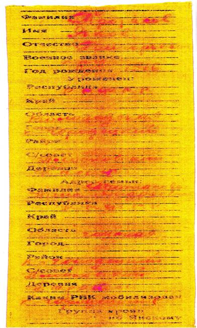
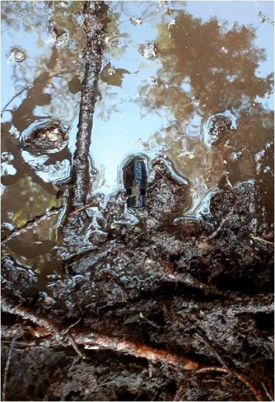

Протасов Яков Григорьевич
Благодаря работе поискового движения 22 августа 2020 года состоялась торжественная церемония захоронения останков солдата Великой Отечественной Войны Протасова Якова Григорьевича, 1916 г.р., уроженца д. Большое Бараково Кичменгско-Городецкого района, погибшего в август-сентябрь 1941 г., и поднятого в ходе Всероссийского поискового отряда «Воскрешение» г. Архангельска. При солдате обнаружен именной медальон «Протасов Яков Григорьевич 1916 г.р., К-Городецкий район Вологодская область Плосковский с/с» который лежал в персональной ячейке.

